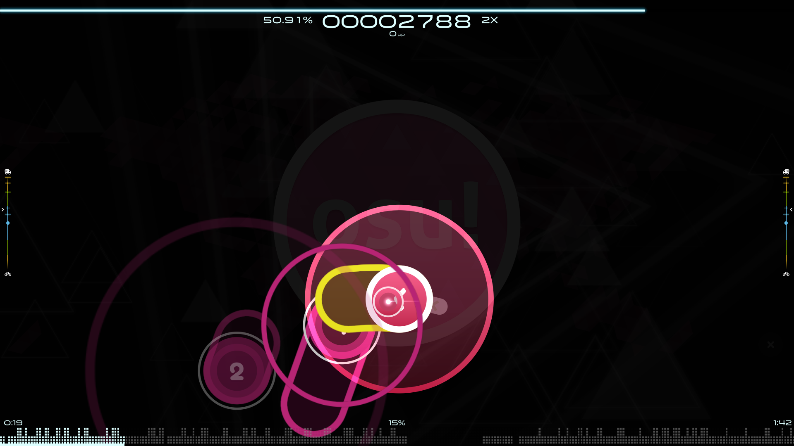
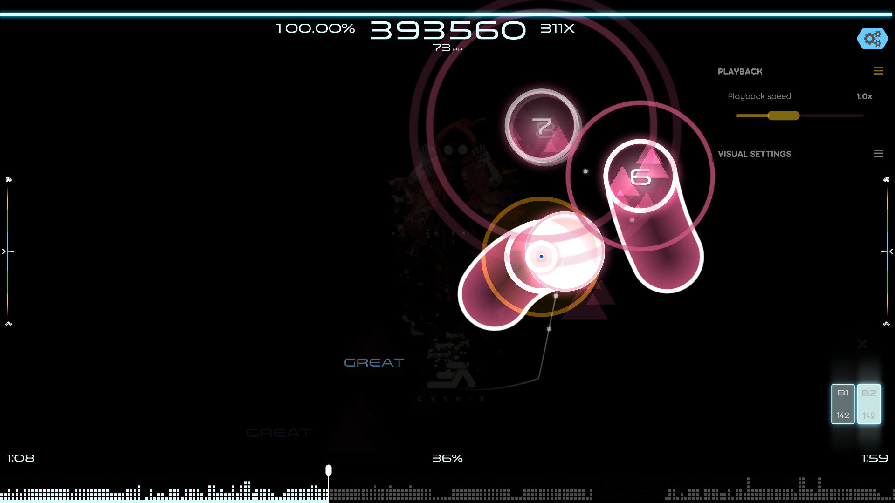

Osu!: Rytmipelien aatelia
Osu! on virtuoosinen rytmipeli, joka tempaa pelaajan mukaansa koukuttavalla pelattavuudellaan ja monipuolisella musiikkivalikoimallaan. Vaikka peli on yksinkertainen konseptiltaan, sen haastavuus ja syvyydet tekevät siitä unohtumattoman kokemuksen musiikin ystäville.
Pelin ydinmekaniikka on yksinkertainen mutta vaativa: pelaajan tehtävänä on seurata ja klikata näytöllä esiintyviä nappeja tai liikutella hiirtä tai kosketusnäyttöä rytmikkäästi musiikin tahtiin. Tämä yksinkertainen konsepti tarjoaa kuitenkin äärimmäisen haastavan ja palkitsevan pelikokemuksen, kun pelaaja pyrkii saavuttamaan täydellisen synkronoinnin musiikin kanssa.

Pelin valtava musiikkivalikoima on yksi sen suurimmista vahvuuksista. Osu! tarjoaa laajan valikoiman kappaleita eri genreistä ja artisteilta ympäri maailmaa, mikä mahdollistaa pelaajilleen löytää ja nauttia musiikista, joka puhuttelee juuri heitä. Lisäksi pelaajat voivat luoda omia kappaleitaan ja jakaa niitä yhteisön kanssa, mikä lisää pelin jatkuvuutta ja monipuolisuutta.
Yhteisöllisyys on keskeinen osa Osu!-pelikokemusta. Pelaajat voivat kilpailla toisiaan vastaan online-tilassa, osallistua turnauksiin ja jakaa omia suorituksiaan muiden kanssa. Lisäksi pelin aktiivinen ja omistautunut yhteisö luo innostavan ympäristön, jossa pelaajat voivat oppia ja kehittyä yhdessä.
Vaikka Osu! tarjoaa erinomaisen pelikokemuksen, sen oppimiskäyrä voi olla jyrkkä ja haastava uusille pelaajille. Aluksi peli saattaa tuntua ylivoimaiselta, ja se voi vaatia kärsivällisyyttä ja omistautumista oppimiseen. Lisäksi pelin visuaalinen tyyli ja käyttöliittymä voivat olla hämmentäviä ja epäselviä joillekin pelaajille.

Kokonaisuudessaan Osu! on erinomainen rytmipeli, joka tarjoaa unohtumattoman pelikokemuksen musiikin ystäville. Sen haastavuus, monipuolinen musiikkivalikoima ja aktiivinen yhteisö tekevät siitä ehdottomasti tutustumisen arvoisen pelin kaikille, jotka rakastavat musiikin ja pelien yhdistelmää.